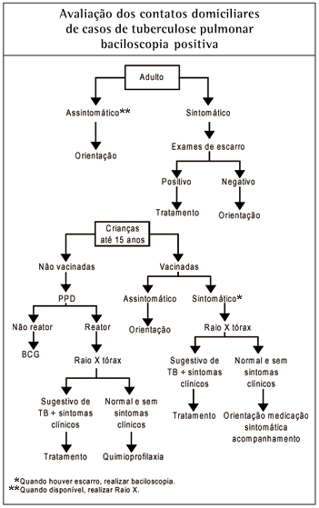

TUBERCULOSE PULMONAR NA INFÂNCIA
No Brasil, a tuberculose é um sério problema da saúde pública, com profundas raízes sociais. A cada ano, são notificados aproximadamente 70 mil casos novos e ocorrem 4,5 mil mortes em decorrência da doença. A tuberculose tem cura e o tratamento é gratuito e disponibilizado pelo Sistema Único de Saúde.
Nos últimos nove anos, a incidência de casos de tuberculose no Brasil reduziu 13,2%, passando de 38,7 casos/100 mil habitantes em 2006 para 33,7 casos/100 mil habitantes em 2015. Já a taxa de mortalidade chegou a 2,2 óbitos para cada 100 mil habitantes, em 2015, contra 2,6 registrados em 2004. Em relação ao número de casos novos, a redução nos últimos nove anos foi de 4,8%.
ETIOPATOGENIA
A transmissão direta do Mycobacterium tuberculosis é feita, quase na totalidade dos casos, pela via respiratória.
Pacientes adultos bacilíferos, ao tossir, espalham no ar aerossol que contém partículas infectantes, conhecidas como partículas de Wels, que contêm geralmente poucos bacilos em suspensão e que medem de 5 a 10 micra de diâmetro. São aspiradas e alcançam as porções terminais da árvore respiratória, chegando aos alvéolos. A primo-infecção tuberculosa inicia-se quando um indivíduo virgem de infecção passa a albergar essa carga bacilar, em geral pequena. No entanto, em certas condições, pela convivência prolongada com doentes muito bacilíferos, o número de bacilos aspirados pode ser grande e levar a múltiplos focos de inoculação nos pulmões.
O bacilo que alcança o alvéolo determina processo inflamatório incaracterístico, cuja reação é idêntica a da agressão por corpo estranho.
O tempo de multiplicação do bacilo é de cerca de 20 horas e à medida que aumenta a população bacteriana no alvéolo, passa a haver reação orgânica, às custas basicamente da imunidade celular, comandada por dois clones principais de linfócitos. Um deles estabelece a imunidade própria da doença e o outro, a hipersensibilidade.
Do ponto de vista anatomopatológico, a lesão característica da tuberculose, encontrada na primo-infecção, é o granuloma ou tuberculoma, constituído de sólida massa celular composta, basicamente, de macrófagos que acorreram ao local da lesão para fagocitar os bacilos e que podem se transformar em células epitelióides e gigantes, com aspecto próprio, denominadas células de Langhans.
À medida que a população de bacilos continua a aumentar, começa a haver migração pelos linfáticos até os gânglios satélites no mediastino. Estabelece-se, então, o complexo primário, constituído pelo foco pulmonar, onde se iniciou o processo, e pelo foco ganglionar, para onde migraram os bacilos, e que continua a se multiplicar. A seguir, pela proximidade dos gânglios com os vasos do hilo pulmonar, os bacilos entram na corrente sanguínea e disseminam-se por vários órgãos, como cérebro, ossos, gânglios, rins e os próprios pulmões. Nesta fase, o M. tuberculosis pode implantar-se nesses locais e aí permanecer em inatividade metabólica por muito tempo.
Em paralelo, vem estabelecendo-se a imunidade adquirida que quase sempre leva o hospedeiro a suplantar a agressão da primo-infecção e a detê-la.
Apenas cerca de 5% dos indivíduos que são acometidos pela primo-infecção são incapazes de deter o processo, instalando-se, então, a tuberculose-doença.
Fatores de Risco: crianças desnutridas, recém saídas de viroses graves, em uso de drogas imunossupressoras ou sob outras condições que baixem sua resistência às infecções.
Os focos extrapulmonares têm potencial evolutivo, praticamente por toda a vida: os bacilos podem ficar no seu interior em estado de inatividade metabólica e meses ou anos após virem a se multiplicar, na vigência de baixa de defesa orgânica.
DIAGNÓSTICO:
O grande desafio relacionado à TB infantil é o seu diagnóstico, dificultado pela ausência de um exame que possa ser considerado padrão-ouro.
A dificuldade ao diagnóstico se dá pela impossibilidade, na maioria dos casos, de se comprovar bacteriologicamente a doença, que em geral cursa com um pequeno número de bacilos (PAUCIBACILAR).
As técnicas diagnósticas classicamente utilizadas em adultos apresentam baixa sensibilidade e especificidade em crianças, e a confirmação pela identificação bacteriológica nem sempre é possível.
Assim, é frequente que o tratamento tenha início na ausência do isolamento da micobactéria, baseado apenas na tríade: quadro clínico e radiológico; positividade do teste tuberculínico; e contato com adulto tuberculoso.
Há predomínio da localização pulmonar sobre as demais formas de tuberculose, isto é, as formas extrapulmonares.
Quadro Clínico
Enquanto adolescentes expressam uma doença com padrão semelhante ao do adulto, crianças menores possuem uma apresentação frequentemente inespecífica e oligossintomática, constituindo, portanto, a faixa etária de maior dificuldade diagnóstica, bem como de maior risco de evolução para doença grave e morte.
Os sintomas nas crianças geralmente são inespecíficos e se confundem com infecções próprias da infância, o que dificulta a avaliação. Na suspeita de tuberculose deve-se procurar a tríade clássica: redução do apetite, perda de peso e tosse crônica.
Pode apresentar febre, habitualmente moderada, persistente por mais de 15 dias e frequentemente vespertina. São comuns: irritabilidade, tosse, perda de peso, sudorese noturna, às vezes profusa; a hemoptise é rara. Podem ocorrer sibilos quando a adenopatia mediastinal comprime um brônquio, possibilitando inclusive uma atelectasia do segmento adjacente ao brônquio. Também é importante pensar-se em tuberculose em casos de pneumonia que não apresentam melhora com o uso de antimicrobianos para germes comuns.
Quadro Radiológico
Os achados radiográficos da tuberculose pulmonar são muito variados. Os mais sugestivos são: adenomegalias hilares e/ou paratraqueais (gânglios mediastínicos aumentados de volume); pneumonias com qualquer aspecto radiológico, de evolução lenta, às vezes associadas a adenomegalias mediastínicas, ou que cavitam durante a evolução; infiltrado nodular difuso (padrão miliar). A tuberculose pulmonar pode cursar com qualquer padrão radiológico, daí a grande dificuldade de se pensar precocemente na doença durante a evolução de pneumonias na infância. Entretanto, sempre deve ser feito o diagnostico diferencial com tuberculose, em crianças com pneumonia de evolução lenta, isto é, quando o paciente vem sendo tratado com antibióticos para germes comuns sem apresentar melhora após duas semanas. Este, aliás, é muitas vezes um critério diagnóstico de tuberculose infantil.
Teste Tuberculínico
Indicada como método auxiliar no diagnóstico da tuberculose, a prova tuberculínica positiva, isoladamente, indica apenas infecção e não é suficiente para o diagnóstico da tuberculose doença.
No Brasil, a tuberculina usada é o PPD RT23, aplicada por via intradérmica no terço médio da face anterior do antebraço esquerdo, na dose de 0,1ml.
A leitura da prova tuberculínica é realizada 72 a 96 horas após a aplicação, medindo-se, com régua milimetrada, o maior diâmetro transverso da área de endurecimento palpável. O resultado, registrado em milímetros, classifica-se como:
0mm a 4mm – não reator – indivíduo não infectado pelo M. tuberculosis ou com hipersensibilidade reduzida.
5mm a 9mm – reator fraco – indivíduo vacinado com BCG ou infectado pelo M. tuberculosis ou por outras micobactérias.
10mm ou mais – reator forte – indivíduo infectado pelo M. tuberculosis, que pode estar doente ou não, e indivíduos vacinados com BCG nos últimos dois anos.
Algumas circunstâncias podem interferir no resultado das provas tuberculínicas, como, por exemplo:
Portadores de doenças imunodepressoras (Sarcoidose, Aids, Neoplasias de cabeça e pescoço, Doenças linfoproliferativas e Outras neoplasias).
Situações com imunodepressão transitória (Vacinação com vírus vivos, Gravidez, Tratamentos com corticosteroides e drogas imunodepressoras, Crianças com menos de dois meses de vida, Idade acima de 65 anos).
Todos os indivíduos infectados pelo HIV devem ser submetidos à prova tuberculínica. Nesses casos, considera-se reator aquele que apresenta endurecimento de 5mm ou mais, e não reator aquele com endurecimento entre 0mm e 4mm.
Nos indivíduos VACINADOS COM BCG, SOBRETUDO NOS IMUNIZADOS ATÉ DOIS ANOS, a prova tuberculínica deve ser interpretada com CAUTELA. Pode ser interpretado como sugestivo de infecção pelo M. tuberculosis quando superior a 10mm em crianças não vacinadas com BCG ou vacinadas há mais de dois anos; ou superior a 15mm em crianças vacinadas com BCG há menos de dois anos.
Contato com Adulto com Tuberculose
Muitas vezes esses são as fontes de contágio para a criança.
A história de contágio com adulto tuberculoso deve ser valorizada, principalmente, nas crianças até a idade escolar.
Indagar sobre pessoas que estejam tossindo em casa, com “resfriado” prolongado e emagrecendo.
Os adultos com mais de três semanas de tosse sem causas aparentes são considerados sintomáticos respiratórios e deveriam realizar baciloscopia de escarro.
Exame Bacteriológico
Exame direto (pesquisa de BAAR): A pesquisa do Mycobacterium tuberculosis deve ser sempre tentada através do exame de escarro nas crianças capazes de expectorar, a partir dos 5 ou 6 anos, ou nas menores, através do lavado gástrico. O lavado gástrico requer jejum e pouca mobilidade ao acordar, portanto deverá ser realizado somente em pacientes internados. Pelas características da doença em crianças (Paucibacilar), podem ser necessários vários exames para se ter uma amostra positiva.
Cultura para micobactéria: está indicada nos casos suspeitos que se mantêm com baciloscopia negativa, nas situações de falência terapêutica (para observação de resistência), nas formas extrapulmonares (cultura do líquor, sangue, urina, fezes, aspirado ganglionar, líquido pleural, líquido pericárdico e macerado de biópsia).
Histopatológico
É um método empregado principalmente na investigação das formas extrapulmonares. A lesão apresenta-se como um granuloma, geralmente com necrose de caseificação e infiltrado histiocitário de células multinucleadas. Como esta apresentação ocorre em outras doenças, o achado de BAAR na lesão é fundamental para auxiliar o diagnóstico de tuberculose.
Hemocultura
Está indicada em pacientes portadores do HIV ou com AIDS e que haja suspeita de doença micobacteriana disseminada.
Diagnóstico pelo Escore do ministério da Saúde (MS)
Considerando as singularidades do diagnóstico na criança, o MS recomenda que o diagnóstico de tuberculose pulmonar em crianças e em adolescentes (negativos à baciloscopia) seja realizado com base no sistema de pontuação ou escore. Esse sistema valoriza dados clínicos, radiológicos e epidemiológicos e não envolve a confirmação bacteriológica, sabidamente difícil na infância.
A utilização do escore propicia diagnóstico e intervenção terapêutica precoces mesmo em unidades básicas de saúde, sem a necessidade de exames complementares mais sofisticados e/ou profissionais especializados.
| Quadro Clínico-Radiológico | Contato de adultos com tuberculose | Teste Tuberculínico | Estado Nutricional | |
|---|---|---|---|---|
Febre ou sintomas como tosse, adinamia, expectoração, emagrecimento, sudorese por 2 semanas ou mais 15 Pontos |
Adenomegalia hilar ou padrão miliar E/OU Condensação ou infiltrado (com ou sem escavação) inalterado por 2 semanas ou mais E/OU Condensação ou infiltrado (com ou sem escavação) por 2 semanas ou mais, evoluindo com piora ou sem melhora com antibióticos para germes comuns 15 Pontos |
Próximo, nos últimos 2 anos 10 Pontos |
PT entre 5-9mm 5 Pontos |
Desnutrição grave (peso < percentil 10) 5 Pontos |
PT ≥10mm 10 Pontos |
||||
Assintomático ou com sintomas há menos de 2 semanas 0 Ponto |
Condensação ou infiltrado de qualquer tipo por menos de 2 semanas 5 Pontos |
Ocasional ou Negativo 0 Ponto |
PT < 5 mm 0 Ponto |
Peso ≥ percentil 10 0 Ponto |
Infecção respiratória com melhora após uso de antibióticos para germes comuns ou sem antibióticos -10 Pontos |
Radiografia Normal -5 Pontos |
|||
- Interpretação:
≥ 40 pontos (diagnóstico muito provável): recomenda-se iniciar o tratamento da tuberculose.
30 a 35 pontos (diagnóstico possível): indicativo de tuberculose; orienta-se iniciar o tratamento a critério médico.
< 25 pontos (diagnóstico pouco provável): deve-se prosseguir com a investigação na criança. Deverá ser feito diagnóstico diferencial com outras doenças pulmonares e podem ser empregados métodos complementares de diagnóstico, como baciloscopias e cultura de escarro induzido ou de lavado gástrico, broncoscopia, histopatológico de punções e outros exames de métodos rápidos.
INDICAÇÕES DE INTERNAÇÃO:
O tratamento será desenvolvido sob regime ambulatorial, diretamente. A hospitalização é recomendada em casos especiais e de acordo com as seguintes prioridades: meningoencefalite tuberculosa; intolerância aos medicamentos incontrolável em ambulatório; estado geral que não permita tratamento em ambulatório; intercorrências clínicas e/ou cirúrgicas relacionadas ou não à TB que necessitem de tratamento e/ou procedimento em unidade hospitalar; e casos em situação de vulnerabilidade social como ausência de residência fixa ou grupos com maior possibilidade de abandono, especialmente se for um caso de retratamento, falência ou multirresistência.
O período de internação deve ser reduzido ao mínimo possível, limitando-se ao tempo suficiente para atender às razões que determinaram sua indicação. As orientações de biossegurança devem ser observadas.
Quando se interna suspeito de tuberculose pulmonar, deve-se colocar em isolamento respiratório e zelar para que seu tempo de permanência no setor seja o menor possível, agilizando sua avaliação e procedendo à internação em isolamento ou alta o mais rapidamente possível.
COMPLICAÇÕES MAIS FREQUENTES:
Tuberculose Pulmonar: derrame pleural, empiema, pneumotórax, abcesso, atelectasia, enfisema, fístula broncopleural, etc.
Tuberculose Extrapulmonar: oclusões intestinais, fístulas gastrointestinais, hemorragias digestivas, complicações neurológicas por fenômenos compressivos, etc.
TRATAMENTO:
ESQUEMAS PARA TRATAMENTO DA TUBERCULOSE:
ESQUEMA BÁSICO
O Programa de Controle da Tuberculose da Secretaria de Saúde do Distrito Federal optou pelo novo esquema preconizado pelo Ministério da Saúde, sendo os MAIORES DE 10 ANOS E ADULTOS com tomada de medicação de FORMA DIÁRIA nos dois primeiros meses (2RHZE – Rifampicina 150mg/ Isoniazida 75 mg/ Pirazinamida 400mg/ Etambutol 275mg), passando à INTERMITÊNCIA com tomada da medicação 3 VEZES POR SEMANA (4RH) após a fase intensiva, no 3º mês.
Já os MENORES DE 10 ANOS iniciam a 1a Fase de 2 meses com o esquema RHZ e posteriormente a 2a Fase de 4 meses com RH. Iniciam a tomada de medicação de FORMA DIÁRIA no primeiro mês (1RHZ – Rifampicina 10mg/Kg/dia; Isoniazida 10mg/Kg/dia; Pirazinamida 35mg/Kg/dia), passando à INTERMITÊNCIA com tomada da medicação 3 VEZES POR SEMANA no esquema RHZ no segundo mês (1RHZ – Rifampicina 20mg/Kg/dia; Isoniazida 20mg/Kg/dia; Pirazinamida 50mg/Kg/dia). A partir do terceiro mês de tratamento, mantém-se o esquema INTERMITENTE, porém domente com o esquema RH (4RH – Rifampicina 20mg/Kg/dia; Isoniazida 20mg/Kg/dia)
Indicações:
- Casos novos de todas as formas de tuberculose pulmonar e extrapulmonar (exceto meningoencefalite) infectados ou não pelo HIV. Caso novo: Paciente que nunca usou medicamentos antituberculose ou usou por menos de 30 dias.
- Retratamento: recidiva (independentemente do tempo decorrido do primeiro episódio) ou retorno após abandono com doença ativa. Preconiza-se a solicitação de cultura, identificação e teste de sensibilidade em todos os casos de retratamento.
| ESQUEMA BÁSICO - MAIORES DE 10 ANOS DE IDADE - 2RHZE/4RH | |||||||||||||||||||||||||||
|
Fármacos | Faixa de peso |
|
Meses | |||||||||||||||||||||||
| RHZE | 20 a 35 kg |
|
|||||||||||||||||||||||||
|
|||||||||||||||||||||||||||
| 150/75/400/275 | 36 a 50 kg |
|
|||||||||||||||||||||||||
| Fase intensiva | comprimido | 2 | |||||||||||||||||||||||||
| em dose fixa | |||||||||||||||||||||||||||
| combinada | >50 kg |
|
|||||||||||||||||||||||||
| 4RH | Até 50 kg | > 50 Kg |
|
||||||||||||||||||||||||
| Fase de | Dose | ||||||||||||||||||||||||||
| mg/kg/dia | Máxima |
|
|||||||||||||||||||||||||
| manutenção | |||||||||||||||||||||||||||
| R | |||||||||||||||||||||||||||
| R | 20 | 600 |
|
4 | |||||||||||||||||||||||
| Intermitente | |||||||||||||||||||||||||||
| H | 20 | 600 |
|
||||||||||||||||||||||||
| (3 X | |||||||||||||||||||||||||||
| semana) | |||||||||||||||||||||||||||
ESQUEMA BÁSICO – MENORES DE 10 ANOS DE IDADE - 2RHZ/4RH
|
DROGAS | PESO DO DOENTE | |
|
|||
| R | 10 | ||
|
H | 10 | |
| Z | 35 | ||
| R | 20 | ||
|
H | 20 | |
| Z | 50 | ||
|
R | 20 | |
|
H | 20 | |
ESQUEMA PARA MENINGOENCEFALITE
Na meningoencefalite tuberculosa deve ser associado corticosteroide ao esquema: prednisona oral (1 -2mg/kg/dia) por quatro semanas ou dexametasona intravenoso nos casos graves (0,3 a 0,4mg/kg/dia), por 4-8 semanas, com redução gradual da dose nas quatro semanas subsequentes.
ESQUEMA PARA MENINGOENCEFALITE - ADULTOS E ADOLESCENTES - 2RHZE/7RH
| Regime |
|
Faixa de |
|
Me | ||||||||||||
| peso | ses | |||||||||||||||
| 2RHZE |
|
20 a 35 kg |
|
|||||||||||||
|
36 a 50 kg |
|
2 | |||||||||||||
| Fase intensiva |
|
>50 kg |
|
|||||||||||||
| Diária | em dose fixa combinada | |||||||||||||||
|
> 45 Kg | |||||||||||||||
|
||||||||||||||||
| mg/kg/dia | Dose Máxima | mg/dia | Meses | |||||||||||||
| Fase de manutenção | R | |||||||||||||||
|
|
600 | ||||||||||||||
|
7 | |||||||||||||||
|
|
|
600 | |||||||||||||
| H | ||||||||||||||||
ESQUEMA PARA MENINGITE TUBERCULOSA - MENORES DE 10 ANOS DE IDADE - 2RHZ/7RH
|
DROGAS | PESO DO DOENTE |
| mg / kg / dia | ||
| R | 20 | |
|
H | 20 |
| Z | 35 | |
| R | 20 | |
|
H | 20 |
| Z | 50 | |
|
R | 20 |
| H | 20 |
CRITÉRIOS DE ALTA:
Alta por cura
Pulmonares inicialmente positivos. A alta por cura será dada quando, ao completar o tratamento, o paciente:
a) apresentar duas baciloscopias negativas (cura bacteriológica
comprovada);
b) não tiver realizado o exame de escarro por ausência de expectoração e
tiver alta com base em dados clínicos e exames complementares (cura
clínica não comprovada bacteriologicamente).
Pulmonares inicialmente negativos ou extrapulmonares. A alta por cura será dada quando for completado o tratamento e com base em critérios clínicos, radiológicos e outros exames complementares.
Alta por abandono de tratamento
Será dada ao doente que deixou de comparecer à Unidade por mais de 30 dias consecutivos, após a data prevista para seu retorno; nos casos de tratamento supervisionado, o prazo de 30 dias conta a partir da última tomada da droga.
PREVENÇÃO
Todos os contatos dos doentes de tuberculose, prioritariamente dos pacientes pulmonares positivos, devem comparecer à unidade de saúde para exame. No quadro a seguir, apresenta-se a conduta para exame dos contatos. Quando diagnosticada a tuberculose em crianças, a equipe de saúde deverá examinar os contatos adultos para busca do possível caso fonte. Após serem examinados e não sendo constatada tuberculose-doença, deve-se orientá-los a procurarem a unidade de saúde, em caso de aparecimento de sintomatologia respiratória.

REFERÊNCIAS:
Jornal Brasileiro de Pneumologia. Tuberculose: Guia de Vigilância Epidemiológica [Internet]. São Paulo; [citado em 2019 Set. 8]. Disponível em: http://www.scielo.br/scielo.php?script=sci_arttext&pid=S1806-37132004000700003.
Natal Sonia. Tuberculose na criança [Internet]. Porto Alegre; [citado em 2019 Set. 7]. Disponível em: http://scielo.iec.gov.br/scielo.php?script=sci_arttext&pid=S0103-460X2000000200004.
Ministério da Saúde. MANUAL DE RECOMENDAÇÕES PARA O CONTROLE DA TUBERCULOSE NO BRASIL [Internet]. [S. l.]; [citado em 2019 Set. 6]. Disponível em: http://bvsms.saude.gov.br/bvs/publicacoes/manual_recomendacoes_controle_tuberculose_brasil.pdf.
Sant‘Anna Clemax Couto. Diagnóstico da Tuberculose na Infância e na Adolescência [Internet]. Rio de Janeiro; [citado em 2019 Set. 8]. Disponível em: http://www.sopterj.com.br/wp-content/themes/_sopterj_redesign_2017/_revista/2012/n_01/14.pdf.
Sant‘anna Clemax Couto, Mourgues Leonardo Véjar, Ferrero Fernando, Balanzat Ana Maria. Diagnóstico e terapêutica da tuberculose infantil: uma visão atualizada de um antigo problema [Internet]. Rio de Janeiro; [citado em 2019 Set. 6]. Disponível em: http://bvsms.saude.gov.br/bvs/is_digital/is_0103/IS23(1)029.pdf.
Sant‘anna Clemax Couto Tuberculose na criança [Internet]. Rio de Janeiro; [citado em 2019 Set. 7]. Disponível em: http://www.jped.com.br/conteudo/98-74-S69/port.pdf.
Responsável pela elaboração da rotina: Dr. Fernando de Velasco Lino